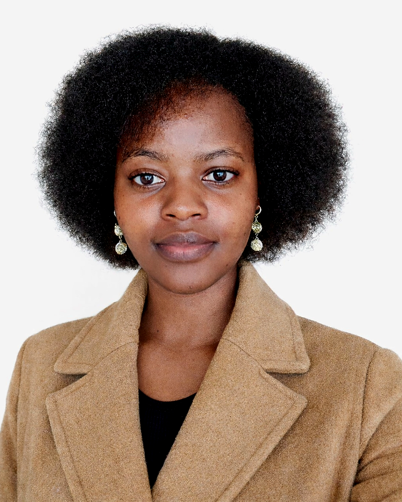
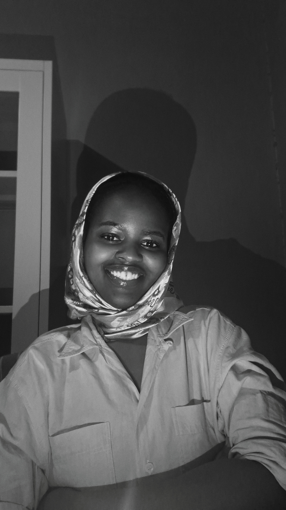
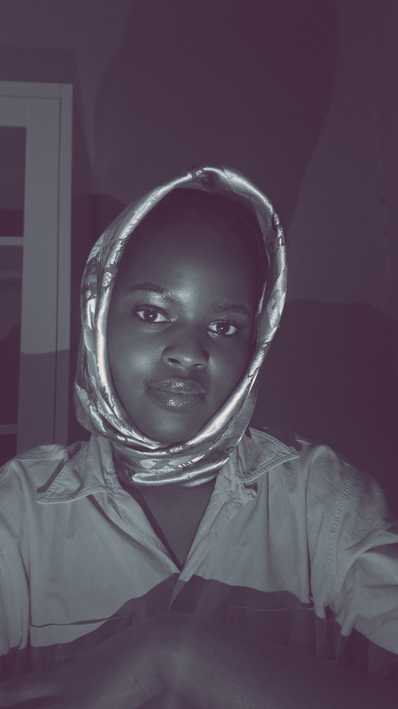

Operations Director · Cybersecurity Professional · Digital Innovator
Passionate about education, technology, and creating systems that positively impact communities. Building skills in cybersecurity while exploring how secure digital systems can support schools, organisations, and future innovation across Africa and beyond.
I'm Grace Mwendwa — an operations and technology professional passionate about education, community impact, and building systems that create real change. My career path has been anything but linear, and I believe that's my greatest strength.
After studying International Business Administration at USIU-Africa, I moved into tech through a software implementation role at Sybyl Kenya — deploying ERP systems across schools and SMEs. That technical grounding now informs how I lead operations at Waterfords Golden Hearts School, where every decision is in service of creating a better learning environment for children.
I am currently building my skills in cybersecurity, exploring how secure digital systems can support schools, organisations, and future innovation across Africa. I believe technology should not only solve problems — it should create opportunities and improve access to knowledge and resources.
What makes me unique is my ability to combine creativity, systems thinking, and a strong interest in community-centred solutions. Beyond technology, I explore philosophy, mythology, and spirituality — interests that deeply influence how I think about leadership, creativity, and long-term impact.
As I continue growing professionally, I aspire to build a career in cybersecurity where I can help organisations and communities protect their digital systems while contributing to meaningful, sustainable progress — in Kenya and globally.


My chosen specialization is Cybersecurity — a field that directly enables my mission of protecting people, institutions, and communities in an increasingly digital world.
Cybersecurity is where my technical background, operations experience, and passion for protecting communities converge. In education especially, data security and digital safety are critical — and often overlooked. I am building expertise to bridge that gap.
My operations background gives me a unique lens — I understand how institutions actually function, where vulnerabilities live, and how to implement secure systems that people will actually use.
A role combining institutional operations experience with cybersecurity knowledge to protect organisations, manage digital risk, and support secure technology adoption — particularly in education or social impact sectors.
A selection of projects spanning software implementation, institutional operations, and community development — each one a story of problem-solving in action.
Led the full transition of Waterfords Golden Hearts School's management system from Odoo to Ed360 — reducing operational costs while maintaining bank-integrated fee collection. Managed vendor coordination, data integrity, and staff onboarding.
Designing and rolling out operational frameworks for staff in phased transitions — creating lasting structures that ensure continuity, accountability, and clarity of roles for long-term institutional growth.
Spearheading the reintroduction of clubs, sporting activities, and educational trips — coordinating logistics, permissions, budgets, and scheduling to restore a holistic school experience.
Digitised and securely managed over 200 student records, implementing data protection measures and structured retrieval systems that significantly reduced administrative processing time.
Facilitated end-to-end system deployments and version migrations across 6 schools and 3 SMEs. Managed Odoo migrations from v11→v13 and v11→v15 for schools, and v11→v15 for SMEs. Conducted 150+ user training sessions and coordinated UAT, go-live, and post-implementation support.
Designed and published this personal portfolio using HTML, CSS, and GitHub Pages — applying She Codes web development skills and self-directed learning to present professional experience to a global audience.
A path built on curiosity, adaptability, and a commitment to making systems — and people — work better.
Leading institutional operations across administration, staff coordination, resource management, and strategic planning. Overseeing monthly financial operations and compliance across a $10,000+ budget. Digitised 200+ student records reducing retrieval time by 67%. Managing NGO partnerships for resource provision and infrastructure support. Reintroducing student enrichment programmes and implementing phased staff structural frameworks.
Managed administrative and operational functions including scheduling, records management, stakeholder communications, staff recruitment, and compliance. Coordinated digital literacy training for staff. Built and maintained a secure digital and physical information management system that laid the foundation for promotion to Director of Operations.
Provided technical support and troubleshooting for Odoo ERP systems across education and other sectors. Conducted 150+ user training sessions on secure system use, increasing adoption and reducing security risks by 20%. Facilitated data migration, UAT, live server acceptance, and post-implementation support across 6 schools and 3 SMEs.
Supported end-month financial reporting, accounts reconciliation, and data management. Assisted with invoice processing, credit checks, and audit exercises.
Concentration in Finance and Accounting. Global business principles, management strategy, cross-cultural communication, and economics.
Part of the university work-study programme — supporting lecturers, course advisors, and the computer lab. Provided first-line technical support, managed confidential records, and coordinated university events.
Served on the sports association committee as Welfare Representative and PR Officer — advocating for student athletes, managing communications, and supporting sports programme visibility.
Managed logistics, scheduling, team welfare, and coordination for the university women's rugby team. Developed strong leadership, organisational, and people management skills in a competitive sports environment.
Supported children's education and personal development through teaching and mentorship — contributing to a nurturing environment for vulnerable youth.
I believe growth never stops. These programmes reflect my deliberate investment in staying current and expanding into emerging fields.
Professional training in remote administrative support, digital tools, project coordination, and client management.
✓ CompletedIntroduction to web development fundamentals including HTML, CSS, and the foundations of building for the web.
✓ CompletedComprehensive programme covering digital security principles, threat landscapes, risk management, and professional cybersecurity practices.
⏳ In Progress — Final WeekPersonal leadership development programme covering governance, institutional leadership, and strategic management for school directors.
⏳ In ProgressMy elevator pitch video will be uploaded here soon. In it, I share my professional journey, what drives me, and the value I bring to organisations navigating operations, technology, and change.
An operations and digital systems professional with roots in software implementation, a passion for education, and growing expertise in cybersecurity.
I bridge the gap between technology and operations — designing structures, managing transitions, securing systems, and building capacity in complex environments.
Actively pursuing global opportunities — particularly in Germany and the EU — where my cross-sector experience translates to high-impact roles in operations or cybersecurity.
I am open to international opportunities — particularly in Europe — where I can apply my cross-sector experience in operations, technology, and people management to meaningful work.
Whether you are looking for a detail-oriented operations leader, a cybersecurity enthusiast, exploring collaboration, or simply want to connect — I would love to hear from you.
You can also find my artwork on Instagram and TikTok — painting, arts & crafts, and creative expression are a big part of who I am beyond the professional world.